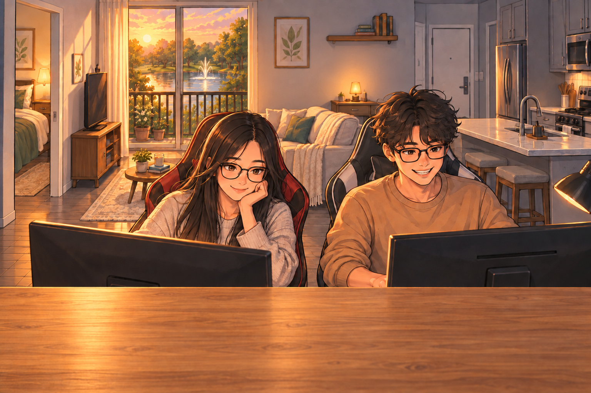

01
College
MDC & FIU
Computer science at Miami Dade. Software development at FIU.
Senior Frontend Engineer · React & TypeScript
linkedin.com/in/veronicacanido · github.com/vcani003
VERONICA CANIDO / SENIOR FRONTEND ENGINEER
VERONICA CANIDO
I’m Vero. React and TypeScript, mostly. Fintech, healthcare, cybersecurity, a café, and some games.
You can start anywhere.

CHAPTERS
Any chapter is open. You don’t have to play.
Hold to step into a playable scene. Keyboard: Space next chapter, Shift+Space back, hold E to enter, Esc to leave.
College
Computer science at Miami Dade. Software development at FIU.
Building for real users
From the internship closet to my own cubicle.
VERONICA CANIDO / THE QUICK VIEW
Six-plus years building interfaces in fintech, healthcare, and cybersecurity. React, TypeScript, and shared components. I led a small team.
SELECTED EXPERIENCE
Recent work first.
Software Engineer / Team Lead May 2022 – Feb 2026
I owned the catalog UI for an AI Monitoring product. People used it to manage and visualize thousands of software components. I led a small team and stayed in the code.
Software Engineer · Junior to Associate Jun 2019 – May 2022
I built an operations portal from scratch. Internal teams later picked it up. I also built healthcare screens for payments, onboarding, and analytics.
Co-Owner & Operator Feb – Aug 2026
Then I was the one using the software. I built Square-integrated kiosk, recipe, inventory, and prep-forecasting tools for the people actually running the café.
GAMES
MULTIPLAYER RHYTHM GAME
A browser rhythm game with chart authoring, WebSocket rooms, chat, and synchronized YouTube playback.
BODY-CONTROLLED BROWSER GAME
A rhythm game you play with your whole body, through the webcam.
COLLEGE
Florida International University
B.S., I.T. & Software Development · 2019
Miami Dade College
A.A., Computer Science · 2017
RÉSUMÉ / THE SHORT VERSION
Engineer, team lead, café co-owner, game maker. Open a thread for the work behind it.
Prints the full career summary.
Original PDF awaiting review.
Accessible interfaces, shared component systems, data-heavy workflows, API integrations, testing, and technical leadership.
THE NEXT CHAPTER
Music: Bohemian Fairy by Franz Gordon, on Epidemic Sound. Chapter tracks: Vino de Verano, Abandoned Shopping Mall, Moonbug, Cat Leg Dog Bone, and Bastille Unbound.
The career text is one HTML page. The walk is another way to read it.
The dates, the work, and the contact line are written once. The islands, Quick View, and the printed page read that HTML.
The landing offers Play the Journey or Quick View. Play opens a chapter. Quick View opens the career text over the page. You can use either one without the other.
The page stays silent until a chapter has been opened once. That chapter plays its own track. Closing it resumes Bohemian Fairy from where it paused. Quick View does not start a song. A refresh starts silent again. A short sound plays while you hold to enter, and another while you stand on the pad. Letting go stops it. M mutes the songs and those sounds.
College, Vino de Verano. JPMorgan Chase, including the closet, Abandoned Shopping Mall. Fortress, Moonbug. Café, Cat Leg Dog Bone. Game development, Bastille Unbound. The closet and the cubicle share one track, and it does not restart.
On the timeline, the bar stays visible. Inside a chapter, WASD or the arrows walk, and E uses what you are standing next to.
Vero decides. These roles draft and review. This is not a sign-off from each of them.
Open on the game?
The landing waits.
Hide a chapter until you scroll there?
No. Any chapter is open.
Count the team on Fortress?
I built the UI and led a small team.
Use Lumi as the campus cat?
A separate black cat. The video starts muted.
Only a Next chapter button?
Also a floor pad. The button stays. The last chapter has no pad.
Play music on arrival?
Silent until a chapter has been opened.
Separate songs for the closet and the cubicle?
They share one track. It does not restart.
First Space from the top of the page?
College.